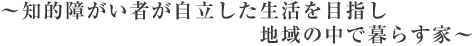
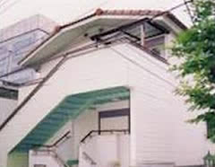
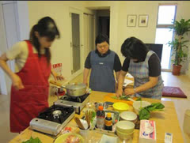
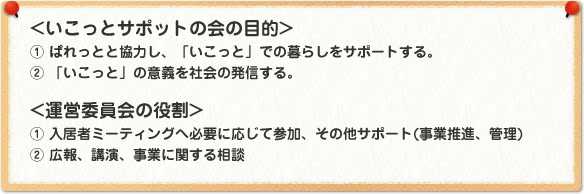

「えびす・ぱれっとホーム」と「ぱれっとの家いこっと」は、当たり前に地域で暮らすことを目指し、"暮らしの場は安らぎの場"であることを大切にしながら、本人の心の自立と社会人としての地域生活をサポートしています。
「えびす・ぱれっとホーム」は、障害者総合支援法に基づく障がい福祉サービスの１つ、共同生活援助事業所（グループホーム）として運営しています。また、併設の知的障がい者(児)緊急一時保護事業は渋谷区より委託をうけて運営しています。
「ぱれっとの家 いこっと」は、障がい者と健常者が共に暮らす家です。福祉施設とは異なり、介助者はいません。福祉の制度を超えたモデル的な事業と言えます。
『NPOぱれっと』の前身である『ぱれっとを支える会』は親たちの要望をまとめながら、彼らが地域で暮らしてゆけるための家づくりとして『グループホーム』を構想しました。
その後、『えびす・ぱれっとホーム』は渋谷区の補助を受け、1993年8月に初台生活寮に続く渋谷区では二番目の生活寮として誕生しその後、2009年4月より、障害者自立支援法に基づく障がい福祉サービスの１つ、協同生活援助事業所（グループホーム）になりました。
| 【定員】 | 6名 |
|---|---|
| 【入居資格】 | 1、原則として渋谷区に居住している15歳以上の知的に障がいのある人 2、身辺がおおむね自立していて、かつ就労している方 |
| 【利用料】 | 55,000円 （食費30,000円、家賃20,000円、水光熱費5,000円） |
| 【支援者】 | 専従職員5名・代替職員・夕食作りボランティア等 |
| 【支援内容】 | 食事の提供、金銭出納の援助、就労維持の援助、対人関係の相談、健康管理など |
| 【住所】 | 〒150-0011 渋谷区東3-14-5 |
| 【TEL】 | 03-3407-6070 |
| 【FAX】 | 03-3407-6070 |

緊急一時保護事業
【緊急一時保護事業とは】
保護者が障がい者を介護出来ない状況になった時、区から委託を受けたえびす・ぱれっとホームが保護者に代わり、一時的に保護する事業です。
【利用対象】
渋谷区に在住している6歳以上の知的障がい者。定員は2名です。利用期間は原則として、一回7日間、年6回までですが、利用日や回数の延長は相談に応じます。
次のような場合に利用が出来ます。
介護者の疾病、出産、冠婚葬祭、転居、出張、休養（レスパイト）など。
【利用の仕方】
緊急一時保護利用登録を渋谷区役所でおこなってください。その後の利用の申し込みについては、平日は渋谷区役所。土、日、祝日、夜間、緊急時は、えびすぱれっとホームへ直接申し込んでください。利用料は無料です。（食費、送迎の交通費、雑費は実費負担となります。）
「障がいのある人もない人も安心して暮らせる家をつくる」
①障がいのある人も、自力で暮らせる家です
②一人ひとりが個室も持ち、共用のキッチンとリビングがあります
③入居者同士のコミュニケーションを大切にし、自分たちで住まい方を作っていく家です
| 【住所】 | 東京都渋谷区東3丁目（「恵比寿」駅より徒歩約8分） |
|---|---|
| 【建物概要】 | 木造（２×４工法）、地上3階建て（居室数：単身者用8室） |
| 【延床面積】 | 約169㎡ |
| 【居室広さ】 | 各室約6畳（収納スペースを除く） 浴室・シャワー・トイレ・洗面・洗濯機は共用。 1階に約19畳の共用キッチン・リビング・ダイニング（通称"いこ間"）があります。 「間取り図」はこちらから |
| 【家賃等】 | 家賃6万2千円～6万6千円、敷金2ヶ月、礼金なし 水光熱費は入居者で均等割り |
| 【入居条件】 | 原則、就労していて日常生活を自立して行える方。年齢不問 |
| 【築年月】 | 2010年4月 |

【ぱれっとの家 いこっと公式ホームページ】
http://ikotto.npo-palette.or.jp/
「ぱれっとの家 いこっと」の詳しい説明やこれまでの歩み、様々な方へのインタビュー記事をご覧いただけます。
運営体制
（株）東京木工所グループとNPOぱれっとで建物のサブリース契約を結び、NPOぱれっとと入居者で賃貸契約を結んでいます。
計画段階では「ぱれっとの家づくり実行委員会」ワークショップを開催。完成後は運営のために新たなボランティア組織として"いこっとサポットの会"を設け、NPOぱれっとと協力して運営をサポートしています。
詳しくは「ぱれっとの家 いこっと」ホームページをご覧ください。
http://ikotto.npo-palette.or.jp/

平成21年度より障害者自立支援法の指定事業所になります
ぱれっとつうしん2008年11月号より
現在渋谷区では、税制改正の影響を受け税収が大幅減になり、障害者福祉では、区の財政から切り離せるものや軽減できるものは・・・
全文を読む [PDF]
朝日新聞に「ぱれっとの家 いこっと」が掲載されました
掲載日：2010年4月22日
2010年4月19日の朝日新聞夕刊13面に「ぱれっとの家 いこっと」が掲載されました。
日本経済新聞にぱれっとの新しい家づくり計画が掲載されました
掲載日：2009年9月18日
日本経済新聞に「ぱれっとの新しい家づくり計画」についての記事が掲載されました。
2009年9月9日（水） 夕刊社会面（14面） タイトル：「健常者・障害者が共同住宅」